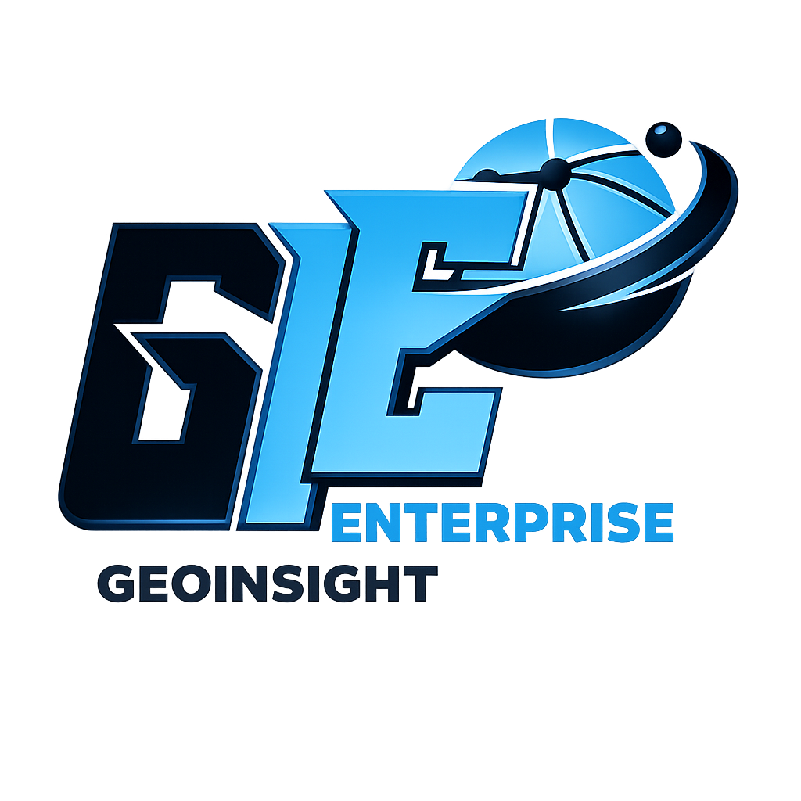

Seeing Earth · Understanding Water
An interactive 3D journey for beginners in Remote Sensing & Hydrology. Follow elevation data from a satellite in orbit all the way to a Digital Elevation Model, watch GIS fill the sinks, and discover watersheds — then test yourself with a mini-quiz!
Use ◀ ▶ to move between steps · drag to rotate · scroll to zoom